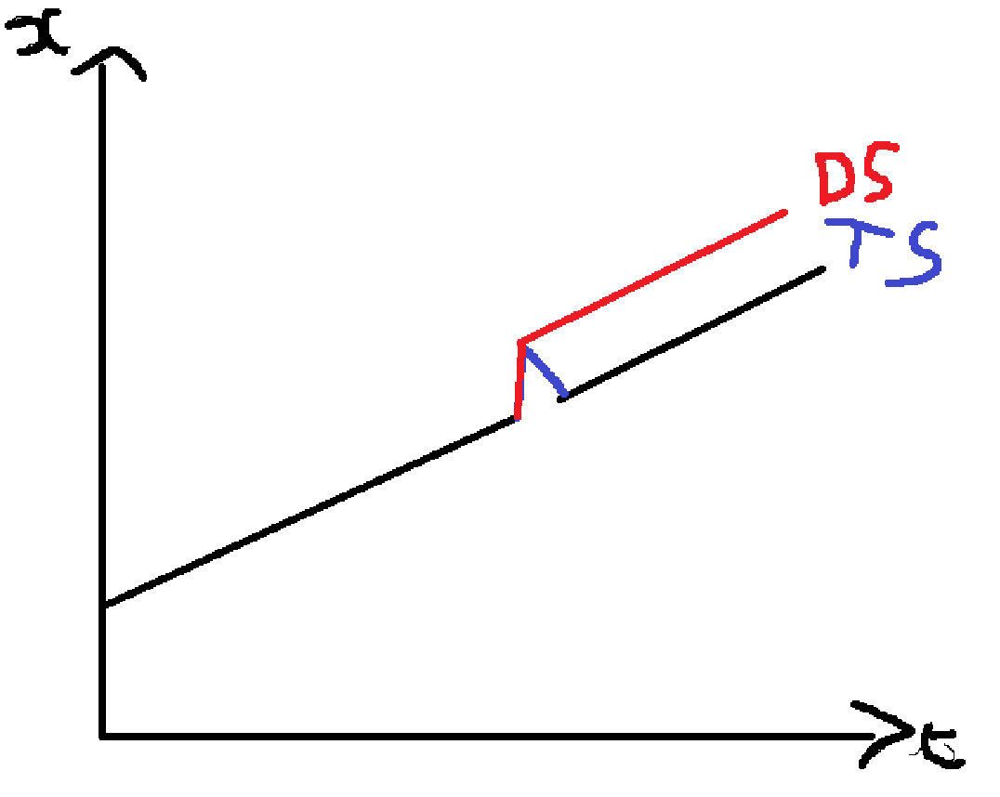

03-ARIMA
Cours
Une série temporelle est une suite de variables aléatoires indexée par le temps. Un tel processus est aussi appelé processus stochastique. Lorsque l’on collecte un échantillon de données temporelles, on obtient un résultat possible, ou une réalisation, d’un processus stochastique. Cette réalisation est unique car on ne peut pas revenir en arrière et recommencer le processus à nouveau. Toutefois, si certaines conditions dans l’histoire avaient été différentes, on aurait généralement obtenu une réalisation différente.
Les séries temporelles sont souvent auto-corrélées dans le temps, entraînant ainsi le besoin d’ajuster les modélisations déjà vues. S’il est possible comme en coupe instantanée de faire des modèles statiques tels que :
\[ Y_t = \alpha + \beta_1 X_t + u_t \]
où la variable endogène à l’instant \(t\) dépend de la valeur de la variable exogène à l’instant \(t\), la possible présence d’auto-corrélation nécessite d’ajuster les modèles pour prendre en compte les périodes passées.
Dans ce chapitre nous allons uniquement modéliser une série \(Y_t\) par ses valeurs passées (aussi appelés lags ou retards) et pas des chocs aléatoires.
Stationnarité
Les séries temporelles et financières sont très souvent caractérisées par un non-stationnarité en moyenne et/ou en variance. Une série est dite non stationnaire si ses propriétés statistiques changent au cours du temps. Plus formellement, on dira qu’une série est stationnaire au second ordre si :
\[ \begin{align} E(X_t^2) &< \infty \\ E(X_t) &= m \hspace{0.3cm} \forall \hspace{0.3cm} t \\ E(X_t,X_{t+h}) &= \gamma_h \hspace{0.3cm} \forall \hspace{0.3cm} t, \hspace{0.3cm} \forall \hspace{0.3cm} h \end{align} \]
Une série stationnaire au second ordre doit avoir une variance finie, une moyenne constante au cours du temps et son auto-covariance doit dépendre uniquement de la différence des temps \(h\).
La non-stationnarité a des conséquences fortes au niveau économétriques. Les méthodes habituelles ne sont plus valables puisque les estimateurs ne sont plus convergents, ils convergent vers une variable aléatoire et non plus leur vraie valeur. Egalement, les distribution asymptotiques ne sont plus standards.
De plus, si l’on régresse une série non stationnaire sur une autre série non-stationnaire, on obtient (sauf cointégration) une régression fallacieuse, c’est à dire que l’on va croire à un pouvoir explicatif de la variable exogène, alors qu’en réalité la corrélation est simplement due au temps qui passe. Voir le site spurious-correlations pour des exemples de corrélations fallacieuses.
Si une série est non-stationnaire, il est nécessaire de procéder à des ajustements afin de la rendre stationnaire et retrouver les bonnes propriétés des estimateurs (ou alors il faut utiliser des méthodes économétriques plus complexes qui prennent directement en compte cette non-stationnarité). Les techniques de stationnarisation vont dépendre du type de processus que suit la série temporelle :
Processus Trend Stationnary (TS) : Dans un processus TS, les conséquences d’un choc sont transitoires, la série revient à sa valeur pré-choc (étant donné le passage du temps). La non-stationnarité est déterministe. Pour stationnariser ce type de processus, il faut retirer la tendance de la série.
Processus Difference Stationnary (DS) : Dans un processus DS, les conséquences d’un choc sont permanentes. La série ne revient jamais à sa valeur pré-choc. La non-stationnarité est stochastique. Pour stationnariser une telle série, on applique un filtre aux différences. Généralement on va utiliser la différence-première.

De multiples tests existent pour détecter la stationnarité tels que le test augmenté de Dickey-Fuller (ADF) ou de Phillips-Perron.
Auto-corrélation et auto-corrélation partielle
La fonction d’auto-corrélation (ACF) d’une série mesure la corrélation entre \(X_t\) et \(X_{x+k}\) où \(k\) est le nombre de périodes dans le futur. Cette fonction mesure la corrélation entre deux points étant donné un intervalle de temps donné.
La fonction d’auto-corrélation partielle (PACF) mesure la corrélation entre \(X_t\) et \(X_{t+k}\) après que la corrélation entre les retards intermédiaires ait été supprimé. Autrement dit, elle mesure la corrélation directe entre deux observations temporelles.
Processus bruit blanc (BB)
Une série temporelle \(Y_t\) est appelée bruit blanc si :
\[ \begin{align} Y_t &= \varepsilon_t \\ E(\varepsilon_t) &= 0 \hspace{0.3cm} \forall \hspace{0.3cm} t \\ V(\varepsilon_t) &= \sigma_\varepsilon^2 \hspace{0.3cm} \forall \hspace{0.3cm} t \\ Cov(\varepsilon_t, \varepsilon_{t'}) &= 0 \hspace{0.3cm} \forall \hspace{0.3cm} t \neq t' \end{align} \]
Un bruit blanc est donc un processus de moyenne nulle, de variance constante et non auto-corrélé. Un bruit ne suit pas forcément une loi normale.
Marche Aléatoire
Une série est appelée marche aléatoire (Random Walk) si :
\[ Y_t = Y_{t-1} + \varepsilon_t \]
Avec \(\varepsilon_t \sim (0, \sigma_\varepsilon^2)\). Il s’agit d’un processus non-stationnaire dans lequel la valeur en \(t\) de la série est définie entièrement par sa valeur en \(t-1\) et une variation aléatoire. Une marche aléatoire est par définition imprévisible.

Processus Auto-Régressif (AR)
On appelle processus auto-régressif d’ordre \(p\) noté \(AR(p)\), un processus \(Y_t\) stationnaire tel que :
\[ Y_t = - \phi_1Y_{t-1} - \cdots - \phi_p Y_{t-p} = \varepsilon_t \]
Avec \(\phi_i \in R, i = 1, \cdots, p\) et \(\varepsilon_t \sim BB(0, \sigma{\varepsilon}^2)\).
En introduisant l’opérateur retard, on peut écrire :
\[ \left( 1 - \phi_1 L - \phi_p L^p \right) Y_t = \varepsilon_t \]
Ou encore sous forme compacte :
\[ \Phi \left( L \right) Y_t = \varepsilon_t \]
Pour un \(AR(p)\), les auto-corrélations partielles s’annulent à partir du rang \(p+1\). Cette propriété peut être utilisée pour définir graphiquement l’ordre d’un processus \(AR(p)\). La fonction d’auto-corrélation n’a pas de forme définie.
Don't know how to automatically pick scale for object of type <ts>. Defaulting
to continuous.


Processus Moyenne Mobile (MA)
On appelle processus \(MA(q)\) un processus \(Y_t\) stationnaire tel que :
\[ Y_t = \varepsilon_t - \theta_1 \varepsilon_{t-1} - \cdots - \theta_q \varepsilon_{t-q} \]
Avec : \(\theta_i \in R, i=1, \cdots, q\) et \(\varepsilon_t \sim BB \left(0, \sigma_{\varepsilon}^2 \right)\)
Avec l’opérateur retard, on a :
\[ Y_t = \left( 1 - \theta_1 L - \cdots - \theta_q L^q \right)\varepsilon_t \]
ou encore :
\[ Y_t = \Theta \left( L \right)\varepsilon_t \]
Pour un processus \(MA(q)\), la fonction d’auto-corrélation s’annule à partir du rang \(q+1\). La fonction d’auto-corrélation partielle n’a pas de forme définie.
Don't know how to automatically pick scale for object of type <ts>. Defaulting
to continuous.


Inversion des processus
Si le polynome \(\Theta (L)\) est inversible, on peut écrire un processus \(MA(q)\) sous la forme d’un \(AR(\infty)\) :
\[ \varepsilon_t = \Theta^{-1} \left( L \right)Y_t = \sum_{i=0}^{\infty} \beta_i Y_{t-i} \]
Avec \(\beta_0 = 1\) et \(\sum \left| \beta_i \right| < \infty\).
Si le polynome \(\Phi(L)\) est inversible, on peut écrire un processus \(AR(p)\) sous forme \(MA(\infty)\) :
\[ X_t = \Phi^{-1} \left( L \right) \varepsilon_t = \sum_{i=0}^{\infty} \alpha_i\varepsilon_{t-i} \]
Avec \(\alpha_0 = 1\) et \(\sum \left| \alpha_i \right| < \infty\).
Processus ARMA(p,q)
Les processus \(ARMA(p,q)\) permettent d’avoir une structure plus parcimonieuse des retards par rapport à un processus \(AR(p)\) ou \(MA(q)\).
Un processus \(Y_t\) stationnaire suit un processus \(ARMA(p,q)\) si :
\[ Y_t - \phi_1 Y_{t-1} - \cdots - \phi_p Y_{t-p} = \varepsilon_t - \theta_1 \varepsilon_{t-1} - \cdots - \phi_q \varepsilon_{t-q} \]
Avec : \(\phi_i \in R, i=1, \cdots, q\) , \(\theta_i \in R, i=1, \cdots, q\) et \(\varepsilon_t \sim BB \left(0, \sigma_{\varepsilon}^2 \right)\)
En introduisant l’opérateur retard, on a :
\[ \left( 1 - \phi_1L - \cdots - \phi_p L^{p} \right)Y_t = \left( 1 - \theta_1 L - \cdots - \theta_qL^q \right)\varepsilon_t \]
Ou encore :
\[ \Phi \left( L \right) Y_t = \Theta \left( L \right)\varepsilon_t \]
On peut déterminer graphiquement l’ordre d’un processus \(ARMA(p,q)\) en regardant les ACF et PACF et en utilisant les mêmes règles que pour les processus \(AR\) et \(MA\).
Don't know how to automatically pick scale for object of type <ts>. Defaulting
to continuous.
Processus SARMA(p,q)(P,Q)
Lorsqu’une série présente de la saisonnalité, 2 grandes possibilités existent pour la prendre en compte dans notre modélisation :
corriger les séries des variations saisonnières
Modélisation la saisonnalité au moyen d’un processus SARMA
Un processus \(SARMA(p,q)(P,Q)\) s’écrit :
\[ \left( 1 - a\phi_1L - \cdots - \phi_pL^p \right) \left( 1 - \phi_{1S}L_S - \cdots - \phi_{PS}L^P_S \right)Y_t = \left( 1 - \theta_1 L - \cdots - \theta_qL^q \right) \left( 1 - \theta_{1S} L_S - \cdots - \theta_{QS}L^Q_S \right)\varepsilon_t \]
S’il existe différent type de saisonnalité, on utilise un polynôme saisonnier par saisonnalité.
Processus ARIMA(p,d,q)
Si une série \(Y_t\) est non stationnaire, cette non-stationnarité peut être estimée au moyen d’un processus \(ARMA(p,q)\) intégré noté \(ARIMA(p,d,q)\) ou \(d\) est un nombre entier et est le paramètre d’intégration. Il s’agit du nombre de fois qu’il faut différencier une série pour la rendre stationnaire.
Un processus \(ARIMA(p,d,q)\) s’écrit :
\[ \Phi \left( L \right) \left( 1-L \right)^d Y_t = \Theta \left( L \right)\varepsilon_t \]
Estimer un processus \(ARIMA(p,d,q)\) sur \(Y_t\) revient à estimer un \(ARMA(p,q)\) sur \(\Delta^d Y_t\).
Rappel que : \(\left( 1 - L^2 \right)Y_t = \left( 1 - 2L + L^2 \right)Y_t\)
Don't know how to automatically pick scale for object of type <ts>. Defaulting
to continuous.
Processus ARFIMA(p,d,q)
Un processus \(ARFIMA(p,d,q)\) est un procesus fractionnairement intégré. Il s’écrit :
\[ \Phi \left( L \right) \left( 1-L \right)^d Y_t = \Theta \left( L \right)\varepsilon_t \]
Avec \(d\) un nombre réel fractionnaire. Un tel processus permet de modéliser les séries très persistantes à mémoire longue.
Identification d’un processus ARMA(p,q)
Avant de modéliser notre série et d’estimer le processus choisi, il faut d’abord identifier le processus que suit la série.
Déterminer l’ordre MA(q)
Pour déterminer l’ordre \(q\) d’un processus \(ARMA(p,q)\), on commence par calculer la fonction d’auto-corrélation de la série \(Y_t\) :
\[ \hat{\rho}_k = \frac{\frac{1}{T} \sum_{t=1}^{T-k} \left( Y_t - \bar{Y} \right) \left( Y_{t+k} - \bar{Y} \right)}{\frac{1}{T} \sum_{t=1}^T \left( Y_t - \bar{Y} \right)^2} \]
Avec \(k = 1, 2, \cdots, K\). Box et Jenkins recommandent de choisir \(K = \frac{T}{4}\).
\[ \begin{cases} H_0 : \hat{\rho}_k = 0 \\ H_1 : \hat{\rho}_k \neq 0 \end{cases} \]
avec sous \(H_0\) : \(\hat{\rho}_k \sim N(0, \sigma_\rho^2)\).
La règle de décision est classique :
Si \(|t_{\hat{\rho}_k}| \geq 1.96\) (ou \(p.value \leq 0.05\)), on rejette l’hypothèse nulle. L’auto-corrélation d’ordre \(k\) est significativement différente de 0.
Si \(|t_{\hat{\rho}_k}| < 1.96\) (ou \(p.value > 0.05\)), on ne peut pas rejeter l’hypothèse nulle. L’auto-corrélation d’ordre \(k\) n’est pas significativement différente de 0.
L’ordre du processus \(MA\) est donné lorsque l’on ne peut plus rejeter l’hypothèse nulle.
Déterminer l’ordre AR(p)
Pour déterminer l’ordre \(p\) d’un processus \(ARMA(p,q)\), on calcule la fonction d’auto-corrélation partielle avec l’aide de l’algorithme de Durbin.
On teste :
\[ \begin{cases} H_0 : \phi_{kk} = 0 \\ H_1 : \phi_{kk} \neq 0 \end{cases} \]
Avec sous \(H_0\) : \(\phi_{kk} \sim N(0, \sigma_{\phi_{kk}}^2)\).
La règle de décision est classique :
Si \(|t_{\hat{\phi}_{kk}}| \geq 1.96\) (ou \(p.value \leq 0.05\)), on rejette l’hypothèse nulle. L’auto-corrélation partielle d’ordre \(k\) est significativement différente de 0.
Si \(|t_{\hat{\phi}_{kk}}| < 1.96\) (ou \(p.value > 0.05\)), on ne peut pas rejeter l’hypothèse nulle. L’auto-corrélation partielle d’ordre \(k\) n’est pas significativement différente de 0.
Modèles identifiés
Les deux étapes précédentes nous ont permis d’identifier un ou plusieurs modèles possibles. Si un ordre \(p = 3\) a été trouvé, cela signifie que les modèles \(AR(p)\) possibles sont : \(AR(1)\), \(AR(2)\) et \(AR(3)\). Si un ordre \(q=2\) a été trouvé, cela signifie que les modèles \(MA(q)\) possibles sont : \(MA(1)\) et \(MA(2)\).
Les processus \(ARMA(p,q)\) possible correspondent à toutes les combinaisons possibles de ces différents processus.
Estimation des processus ARMA
Pour estimer un processus \(ARMA(p,q)\), on utilise la méthode du maximum de vraisemblance. Cette méthode consiste à maximiser la log-vraisemblance d’un modèle afin que les valeurs prédites soient le plus proche possible des vraies valeurs de la série. On suppose généralement que \(\varepsilon_t \sim N(0, \sigma_\varepsilon^2)\).
La log-vraisemblance d’un modèle \(ARMA(p,q)\) s’écrit :
\[ log(L_t) = - \frac{T}{2} log(2 \pi) - \frac{T}{2} log(\sigma_{\varepsilon}^2) - \frac{T}{2} log \left( \text{det}(ZZ' ) \right) - \frac{S(\phi, \theta)}{2 \sigma_{\varepsilon}^2} \]
Avec \(Z\) une matrice dépendant des paramètres \(\phi\) et \(\theta\) et
\[ S(\phi, \theta) = \sum \left( E \left[ \varepsilon_t | X_t, \phi_i, \theta_j, \sigma_{\varepsilon}^2 \right] \right)^2 \]
On cherche à maximiser \(Log(L_t)\) par rapport à : \(\phi_i, \theta_j, \sigma_{\varepsilon}^2\).
Le but de cette étape est d’estimer les paramètres \(\phi_i\) et \(\theta_j\) pour l’ensemble des modèles identifiés.
Validation des processus ARMA
Cette étape consiste à valider les modèles estimés, puis à les départager. Pour cela, on va appliquer un certain nombre de tests sur les résidus afin de déterminer s’ils suivent bien un bruit blanc. Sinon cela veut dire que des caractéristiques de la série n’ont pas été prises en compte dans la modélisation.
On va également appliquer des tests de significativité sur les paramètres afin de garder les modèles avec des paramètres significatifs.
Enfin, on va départager les modèles ayant passé les différents tests en utilisant les critères de sélection.
Tests sur les paramètres
Le but ici est de tester si les derniers retards inclus sont significativement différents de 0 ou non. Si ce n’est pas le cas, leur inclusion n’est guère utile et on va privilégié un modèle plus parcimonieux.
On peut donc tester \(H_0 : p' = p-1, q' = q\)
\[ \begin{cases} H_0 : \text{ARMA}(p-1, q) &\Leftrightarrow \phi_p = 0 \\ H_1 : \text{ARMA}(p,q)& \Leftrightarrow \phi_p \neq 0 \end{cases} \]
La règle de décision est classique :
Si \(|t_{\hat{\phi}_p}| \geq 1.96\) (ou \(p.value \leq 0.05\)), on rejette l’hypothèse nulle de non significativité du coefficient. On valide donc l’inclusion du \(p^{\text{ième}}\) coefficient.
Si \(|t_{\hat{\phi}_p}| < 1.96\) (ou \(p.value >0.05\)), on ne peut pas rejeter l’hypothèse nulle de non significativité du coefficient. On ne valide donc pas l’inclusion du \(p^{\text{ième}}\) coefficient. Il faut donc estimer puis tester un \(ARMA(p-1,q)\).
On effectue le même test sur le coefficient \(q\) :
On peut donc tester \(H_0 : p' = p, q' = q-1\)
\[ \begin{cases} H_0 : \text{ARMA}(p, q-1) &\Leftrightarrow \theta_q = 0 \\ H_1 : \text{ARMA}(p,q)& \Leftrightarrow \theta_q \neq 0 \end{cases} \]
La règle de décision est classique :
Si \(|t_{\hat{\theta}_q}| \geq 1.96\) (ou \(p.value \leq 0.05\)), on rejette l’hypothèse nulle de non significativité du coefficient. On valide donc l’inclusion du \(q^{\text{ième}}\) coefficient.
Si \(|t_{\hat{\theta}_q}| < 1.96\) (ou \(p.value >0.05\)), on ne peut pas rejeter l’hypothèse nulle de non significativité du coefficient. On ne valide donc pas l’inclusion du \(q^{\text{ième}}\) coefficient. Il faut donc estimer puis tester un \(ARMA(p,q-1)\).
Le but ici est d’éliminer l’ensemble des modèles dont les derniers retards ne sont pas significatifs.
Tests sur les résidus
Absence d’auto-corrélation
Les tests d’auto-corrélation servent à déterminer si toute la dynamique de la série a bien été prise en compte ou pas. Les résidus ne doivent pas être auto-corrélé, sinon cela signifie qu’une partie de la dynamique a été mise de coté.
Les tests les plus utilisés sont les tests de Box-Pierce et de Ljung-Box
Test de Box-Pierce
On teste l’hypothèse nulle d’absence d’auto-corrélation dans les résidus.
\[ \begin{cases} H_0 : \hat{\rho}_{\hat{\varepsilon}1} = \cdots = \hat{\rho}_{\hat{\varepsilon}K} \\ H_1 : \exists \hat{\rho}_{\hat{\varepsilon}k} \neq 0 \end{cases} \]
Une fois le modèle estimé, on récupère donc la série des résidus et on calcule la statistique de test :
\[ BP(K) = T \sum_{k=1}^K \hat{\rho}_{\hat{\varepsilon}k} \sim \chi^2(K-p-q) \]
Avec \(\hat{\rho}_{\hat{\varepsilon}k}\) le coefficient d’auto-corrélation des résidus à l’ordre \(k\).
La règle de décision est la suivante :
Si \(BP(K) \geq \chi^2(K-p-q)\) (ou si \(p.value \leq 0.05\)), on rejette \(H_0\). Les résidus sont auto-corrélés à l’ordre \(k\). Le modèle n’est pas validé. Toute la dynamique de la série n’est pas identifiée.
Si \(BP(K) < \chi^2(K-p-q)\) (ou si \(p.value > 0.05\)), on ne peut pas rejeter \(H_0\). Les résidus ne sont pas auto-corrélés à l’ordre \(k\). Le modèle est validé de ce point de vue. Toute la dynamique de la série semble identifiée.
Test de Ljung-Box
Ce test est à privilégier dans le cadre de petits échantillons.
On teste l’hypothèse nulle d’absence d’auto-corrélation dans les résidus :
\[ \begin{cases} H_0 : \hat{\rho}_{\hat{\varepsilon}1} = \cdots = \hat{\rho}_{\hat{\varepsilon}K} \\ H_1 : \exists \hat{\rho}_{\hat{\varepsilon}k} \neq 0 \end{cases} \]
Une fois le modèle estimé, on récupère donc la série des résidus et on calcule la statistique de test :
\[ LB(K) = T(T+2) \sum_{k=1}^K \frac{\hat{\rho}_{\hat{\varepsilon}k}^2}{T-K} \sim \chi^2(K-p-q) \]
Avec \(\hat{\rho}_{\hat{\varepsilon}k}\) le coefficient d’auto-corrélation des résidus à l’ordre \(k\).
La règle de décision est la suivante :
Si \(LB(K) \geq \chi^2(K-p-q)\) (ou si \(p.value \leq 0.05\)), on rejette \(H_0\). Les résidus sont auto-corrélés à l’ordre \(k\). Le modèle n’est pas validé. Toute la dynamique de la série n’est pas identifiée.
Si \(LB(K) < \chi^2(K-p-q)\) (ou si \(p.value > 0.05\)), on ne peut pas rejeter \(H_0\). Les résidus ne sont pas auto-corrélés à l’ordre \(k\). Le modèle est validé de ce point de vue. Toute la dynamique de la série semble identifiée.
Homoscédasticité
La variance des résidus doit être constante. Sinon cela signifie que des éléments de la dynamique n’ont ps été pris en compte.
Test de White
On récupère la série des résidus \(\hat{\varepsilon}_t\) du modèle.
On estime une régression du type :
\[ \hat{\varepsilon}_t^2 = a_0 + a_1 Y_{t-1} + b_1 Y_{t-1}^2 + \cdots + a_p Y_{t-p} + b_p Y_{t-p}^2 + u_t \]
On test l’hypothèse nulle de variance constante (homoscédasticité) :
\[ \begin{cases} H_0 : a_i = b_i = 0 \hspace{0.3cm} \forall i = 1, \cdots, p \\ H_1 : \exists \hspace{0.3cm} a_i \neq 0 \hspace{0.3cm} | \hspace{0.3cm} b_i \neq 0\end{cases} \]
On calcule la statistique de test :
\[ LM = TR^2 \sim \chi^2(2p) \]
Avec \(R^2\) le coefficient de détermination de la régression auxiliaire estimée.
La règle de décision est la suivante :
Si \(LM \geq \chi^2(2p)\) (ou \(p.value \leq 0.05\)), on rejette \(H_0\). Les résidus n’ont pas une variance constante et sont donc hétéroscédastiques. Toute la dynamique de la série n’a pas été prise en compte. Le modèle est invalidé.
Si \(LM < \chi^2(2p)\) (ou \(p.value >0.05\)), on ne peut pas rejeter \(H_0\). Les résidus ont une variance constante et sont donc homoscédastiques. Toute la dynamique de la série semble prise en compte. Le modèle est validé de ce point de vue.
Test ARCH
Le test ARCH vise à déterminer si la série suit un processus Autoregressif Conditionnellement Hétéroscédastique (ARCH). Un tel processus est caractérisé par une variance non-constante au cours du temps et dont la dynamique (de la variance) dépend de ses propres valeurs passées. Cela amène à des phénomènes de cluster de volatilité très courants avec des séries financières.
On estime le modèle, puis l’on récupère la série des résidus \(\hat{\varepsilon}_t\).
On estime la régression suivante :
\[ \hat{\varepsilon}_t^2 = \alpha_0 + \sum_{i=1}^l \alpha_i \hat{\varepsilon}_{t-i}^2 \]
On calcule ensuite le coefficient de détermination \(R^2\) de cette régression.
On teste l’hypothèse nulle d’absence d’hétéroscédasticité conditionnelle :
\[ \begin{cases} H_0 : \alpha_i = 0 \hspace{0.3cm} \forall i = 1, \cdots, l \\ H_1 : \exists \alpha_i \neq 0 \end{cases} \]
On calcule la statistique :
\[ LM = TR^2 \sim \chi^2(l) \]
La règle de décision est la suivante :
Si \(LM \geq \chi^2(l)\) (ou \(p.value \leq 0.05\)), on rejette \(H_0\). Les résidus n’ont pas une variance conditionnelle constante et sont donc conditionnellement hétéroscédastiques. Toute la dynamique de la série n’a pas été prise en compte. Le modèle est invalidé.
Si \(LM < \chi^2(2p)\) (ou \(p.value >0.05\)), on ne peut pas rejeter \(H_0\). Les résidus ont une variance conditionnelle constante et sont donc conditionnellement homoscédastiques. Toute la dynamique de la série semble prise en compte. Le modèle est validé de ce point de vue.
Sélection d’un processus ARMA
A l’issu des différents tests, il est possibles que différents modèles soient sélectionnés. Pour choisir le modèle à garder, on va utiliser des critères de choix de modèles.
Critères standards
Ces critères sont basés sur l’erreur de prévision des valeurs valeurs prédites \(\hat{\varepsilon}_t\) que l’on va chercher à minimiser. On peut utiliser les critères suivants :
- Erreur Absolue Moyenne (MAE)
\[ \text{MAE} = \frac{1}{T} \sum_t \left| \hat{\varepsilon}_t \right| \]
- Racine de l’erreur quadratique moyenne (RMSE)
\[ \text{RMSE} = \sqrt{\frac{1}{T} \sum_t \hat{\varepsilon}_t^2} \]
- Écart absolu Moyen en % (MAPE)
\[ \text{MAPE} = 100 \times \frac{1}{T} \sum_t \left| \frac{\hat{\varepsilon}_t}{Y_t} \right| \]
Les critères d’information
Les critères d’information opèrent un arbitrage entre la bonne qualité d’ajustement du modèle et la parcimonie du modèle. Ces critères sont à minimiser et vont indiquer le modèle qui sera le plus parcimonieux possible tout en gardant une bonne qualité de prédiction.
- Akaike (AIC)
\[ \text{AIC} = log \left( \hat{\sigma}_{\varepsilon}^2 \right) + \frac{2(p+q)}{T} \]
- Schwarz (SIC)
\[ \text{SIC} = log \left( \hat{\sigma}_{\varepsilon}^2 \right) + (p+q) \frac{log(T)}{T} \]
- Hanan-Quinn (HQ)
\[ \text{HQ} = log \left( \hat{\sigma}_{\varepsilon}^2 \right) + \alpha (p+q) log \left( \frac{log(T)}{T} \right) \]
avec \(\alpha\) une constante que l’on choisit avec généralement \(\alpha = 1\).
Généralement, le critère SIC aura tendance à retenir des modèles plus parcimonieux que le critère AIC. AIC est souvent le critère le plus utilisé.
On va chercher le modèle qui va minimiser le plus de critères d’informations possibles.
Prévisions d’un processus ARMA
Soit un processus \(ARMA(p,q) : \Phi(L) Y_t = \Theta(L) \varepsilon_t\) et soit \(\hat{Y}_{t+k}\) la prévision faite en \(t\) pour la date \(t+k\) où \(k\) est l’horizon de prévision.
La prévision est donnée par :
\[ \hat{Y}_{t+k} = E \left[ Y_{t+k} \hspace{0.15cm} | \hspace{0.15cm} I_t \right] \] Où \(I_t\) correspond à l’ensemble d’information disponible à la date \(t\). \(I_t\) contient tout l’historique de la variable \(Y_t\) et du terme d’erreur \(\varepsilon_t\) jusqu’à la date \(t\) incluse.
Code
# Exécute le script setup.R pour charger tous les éléments importants
source(here::here("02-codes", "utils", "setup.R"))Données et analyse
Présentation des données
Nous allons essayer de modéliser et de prédire la série du S&P 500 que l’on peut obtenir depuis 2007 grâce au package pdfetch qui est un package permettant de télécharger des séries de données depuis de nombreuses sources différentes. Les données sont retournées comme étant des objets xts. Il s’agit d’un type d’objet indiquant que la série est une série temporelle. Il est parfois nécessaires pour certaines fonctions que les séries données soient dans un format temporelle à cause de la gestion des dates.
# Importer les données du S&P500
sp_500 <- pdfetch::pdfetch_YAHOO("^gspc", fields = "adjclose", from = as.Date("2007-01-03"), to = as.Date("2026-01-10"))# Visualiser les données
sp_500 X.gspc
2007-01-03 1416.60
2007-01-04 1418.34
2007-01-05 1409.71
2007-01-08 1412.84
2007-01-09 1412.11
2007-01-10 1414.85
2007-01-11 1423.82
2007-01-12 1430.73
2007-01-16 1431.90
2007-01-17 1430.62
...
2025-12-26 6929.94
2025-12-29 6905.74
2025-12-30 6896.24
2025-12-31 6845.50
2026-01-02 6858.47
2026-01-05 6902.05
2026-01-06 6944.82
2026-01-07 6920.93
2026-01-08 6921.46
2026-01-09 6966.28# Représenter la série du S&P500
sp_500 |>
plot()
Visuellement, la série ne semble pas stationnaire. Elle semble être caractérisée par une tendance à la hausse et potentiellement une variance non constante.
# Auto-corrélation des prix du S&P500
sp_500 |>
acf()
La fonction d’auto-corrélation montre une très forte persistance de l’auto-corrélation ce qui est un signe de non-stationnarité.
Test ADF automatique
On va tester la non-stationnarité avec le test ADF. J’utilise ici, une fonction d’un package fait maison qui permet de faire la procédure ADF automatiquement (à l’inverse du package urca) et qui permet si nécessaire de retourner un dataframe avec les résultats, ce qui peut être pratique lorsque l’on veut tester la stationnarité de plusieurs séries et récupérer les résultats dans une table.
# N'exécuter que si le package dobby est installé
if (rlang::is_installed("dobby")) {
# Test ADF automatique
dobby::adf_test_auto(
sp_500, # Série à utiliser
"S&P500", # Nom à donner à la série
lags = 20, # Nombre de lags maximum à tester
return_res = FALSE # Indiquer si on veut retourner un tableau de résultat ou juste un message
)
}
#################################################
# Augmented Dickey-Fuller test for S&P500 serie #
#################################################model selected : Without drift and trendLags number : 9H0 : S&P500 serie has at least one unit roott stat : 3.36366244034386✖ H0 can't be rejected for a 5% confidence. S&P500 serie has at least one unit root.La série n’est pas stationnaire selon le test ADF puisque l’on ne peut pas rejeter l’hypothèse nulle.
Le modèle sélectionné est le modèle sans constante ni tendance. La série du S&P500 est une une série de type DS. Il faut donc la différencier.
Test ADF manuel
On peut également faire le test plus manuellement avec le package urca et sa fonction ur.df(). Il s’agit de la fonction qui est utilisée dans le package dobby. Simplement la fonction ur.df() ne donne pas de résultats de manière immédiate. Il faut regarder manuellement la significativité des termes voulus et tester chaque modèle un à un.
urca::ur.df(
y = sp_500, # Série à utiliser
type = "trend", # type de modèle ADF : ici avec tendance et constante
lags = 10, # nombre de lags maximum
selectlags = "AIC" # Sélection du nombre de lag avec le critère AIC
) |>
summary() # Donner un résummé du résultat
###############################################
# Augmented Dickey-Fuller Test Unit Root Test #
###############################################
Test regression trend
Call:
lm(formula = z.diff ~ z.lag.1 + 1 + tt + z.diff.lag)
Residuals:
Min 1Q Median 3Q Max
-347.70 -10.54 1.11 12.74 432.57
Coefficients:
Estimate Std. Error t value Pr(>|t|)
(Intercept) -0.6614002 0.9646979 -0.686 0.49300
z.lag.1 -0.0007583 0.0008387 -0.904 0.36596
tt 0.0016604 0.0009183 1.808 0.07064 .
z.diff.lag1 -0.0741748 0.0144829 -5.122 0.000000315 ***
z.diff.lag2 0.0364566 0.0145097 2.513 0.01202 *
z.diff.lag3 -0.0382255 0.0145122 -2.634 0.00847 **
z.diff.lag4 -0.0604099 0.0145154 -4.162 0.000032135 ***
z.diff.lag5 0.0027824 0.0145444 0.191 0.84830
z.diff.lag6 -0.0334936 0.0145159 -2.307 0.02108 *
z.diff.lag7 0.0372310 0.0145171 2.565 0.01036 *
z.diff.lag8 -0.0404052 0.0145189 -2.783 0.00541 **
z.diff.lag9 0.0577312 0.0144890 3.984 0.000068639 ***
---
Signif. codes: 0 '***' 0.001 '**' 0.01 '*' 0.05 '.' 0.1 ' ' 1
Residual standard error: 32.49 on 4763 degrees of freedom
Multiple R-squared: 0.02414, Adjusted R-squared: 0.02189
F-statistic: 10.71 on 11 and 4763 DF, p-value: < 0.00000000000000022
Value of test-statistic is: -0.9042 4.9486 3.7731
Critical values for test statistics:
1pct 5pct 10pct
tau3 -3.96 -3.41 -3.12
phi2 6.09 4.68 4.03
phi3 8.27 6.25 5.34On commence d’abord par sélectionner le modèle à utiliser : avec constante et tendance, avec constante sans tendance ou sans constante ni tendance. On commence toujours par le modèle avec constante et tendance. Le paramètre de la tendance est donnée à la ligne tt. Attention, pour tester la significativité des paramètres, il faut utiliser les valeurs tabulées par Dickey-Fuller puisque les valeurs usuelles ne sont pas utilisables.
La valeur critique associée au coefficient de la tendance dans le modèle 3 et avec un nombre d’observations grand au seuil de 5% est \(2.78\). La t-value du coefficient de la tendance est de \(1.808 < 2.78\). ON ne peut donc pas rejeter l’hypothèse nulle de non-significativité de la tendance. On rejette le modèle 3 et on passe au modèle avec constante et sans tendance.
urca::ur.df(
y = sp_500, # Série à utiliser
type = "drift", # type de modèle ADF : ici sans tendance et avec constante
lags = 10, # nombre de lags maximum
selectlags = "AIC" # Sélection du nombre de lag avec le critère AIC
) |>
summary() # Donner un résummé du résultat
###############################################
# Augmented Dickey-Fuller Test Unit Root Test #
###############################################
Test regression drift
Call:
lm(formula = z.diff ~ z.lag.1 + 1 + z.diff.lag)
Residuals:
Min 1Q Median 3Q Max
-348.08 -10.46 1.17 12.60 432.47
Coefficients:
Estimate Std. Error t value Pr(>|t|)
(Intercept) -0.4407891 0.9571793 -0.461 0.64517
z.lag.1 0.0006483 0.0003135 2.068 0.03874 *
z.diff.lag1 -0.0749087 0.0144806 -5.173 0.00000024 ***
z.diff.lag2 0.0357974 0.0145086 2.467 0.01365 *
z.diff.lag3 -0.0389440 0.0145103 -2.684 0.00730 **
z.diff.lag4 -0.0610703 0.0145143 -4.208 0.00002628 ***
z.diff.lag5 0.0021777 0.0145440 0.150 0.88099
z.diff.lag6 -0.0340639 0.0145159 -2.347 0.01898 *
z.diff.lag7 0.0366844 0.0145174 2.527 0.01154 *
z.diff.lag8 -0.0410067 0.0145185 -2.824 0.00476 **
z.diff.lag9 0.0571951 0.0144894 3.947 0.00008016 ***
---
Signif. codes: 0 '***' 0.001 '**' 0.01 '*' 0.05 '.' 0.1 ' ' 1
Residual standard error: 32.5 on 4764 degrees of freedom
Multiple R-squared: 0.02347, Adjusted R-squared: 0.02142
F-statistic: 11.45 on 10 and 4764 DF, p-value: < 0.00000000000000022
Value of test-statistic is: 2.0676 5.7855
Critical values for test statistics:
1pct 5pct 10pct
tau2 -3.43 -2.86 -2.57
phi1 6.43 4.59 3.78On tester la significativité du paramètre de la constante (Intercept). La valeur critique associée à la constante dans le modèle 2, avec un nombre grand d’observations et un seuil de 5% est de \(2.52\). La t-value associée au paramètre de la constante est de \(|-0.41| < 2.52\). On ne peut donc pas rejeter l’hypothèse nulle de non significativité de la constante dans le modèle 2. On rejette ce modèle et on passe au modèle 1.
urca::ur.df(
y = sp_500, # Série à utiliser
type = "none", # type de modèle ADF : ici sans tendance et sans constante
lags = 10, # nombre de lags maximum
selectlags = "AIC" # Sélection du nombre de lag avec le critère AIC
) |>
summary() # Donner un résummé du résultat
###############################################
# Augmented Dickey-Fuller Test Unit Root Test #
###############################################
Test regression none
Call:
lm(formula = z.diff ~ z.lag.1 - 1 + z.diff.lag)
Residuals:
Min 1Q Median 3Q Max
-347.80 -10.65 1.00 12.45 432.78
Coefficients:
Estimate Std. Error t value Pr(>|t|)
z.lag.1 0.0005228 0.0001551 3.371 0.000756 ***
z.diff.lag1 -0.0747333 0.0144744 -5.163 0.000000253 ***
z.diff.lag2 0.0359699 0.0145026 2.480 0.013163 *
z.diff.lag3 -0.0387647 0.0145038 -2.673 0.007549 **
z.diff.lag4 -0.0608982 0.0145082 -4.197 0.000027481 ***
z.diff.lag5 0.0023484 0.0145381 0.162 0.871682
z.diff.lag6 -0.0339034 0.0145105 -2.336 0.019508 *
z.diff.lag7 0.0368449 0.0145120 2.539 0.011151 *
z.diff.lag8 -0.0408408 0.0145128 -2.814 0.004911 **
z.diff.lag9 0.0573535 0.0144842 3.960 0.000076127 ***
---
Signif. codes: 0 '***' 0.001 '**' 0.01 '*' 0.05 '.' 0.1 ' ' 1
Residual standard error: 32.5 on 4765 degrees of freedom
Multiple R-squared: 0.02465, Adjusted R-squared: 0.0226
F-statistic: 12.04 on 10 and 4765 DF, p-value: < 0.00000000000000022
Value of test-statistic is: 3.3706
Critical values for test statistics:
1pct 5pct 10pct
tau1 -2.58 -1.95 -1.62On va tester la significativité du terme auto-régressif en niveau z.lag.1. La valeur critique du coefficient pour le modèle 1, avec un grand nombre d’observations et un seuil de 5% est de \(-1.95\). La t-value du coefficient est : \(3.371 > -1.95\). On rappelle que sur ce test de racine unitaire, la règle de décision est inversée. On rejetera l’hypothèse nulle de non-stationnarité lorsque la t-value et inférieure à la valeur critique (NE PAS PRENDRE LES VALEURS ABSOLUES ICI).
Notre t-value étant supérieure à la valeur critique, on ne peut pas rejeter l’hypothèse nulle de non stationnarité de la série. Notre série est vraisemblablement caractérisée par un processus \(I(1)\) avec au moins une racine unitaire. Pour pouvoir l’utiliser dans des modélisations classiques, il faut la stationnariser.
Stationnarisation
Ici on va la log-différencier pour obtenir le changement en pourcentage de la série, autrement dit les rendements journaliers observés.
# Calculer les rendements de la série
# Faire la log différence des données + retirer les valeurs manquantes
rend_sp_500 <-
na.omit((log(sp_500) - log(lag(sp_500))) * 100)
rend_sp_500 X.gspc
2007-01-04 0.122753250
2007-01-05 -0.610316783
2007-01-08 0.221785708
2007-01-09 -0.051680950
2007-01-10 0.193847181
2007-01-11 0.631986163
2007-01-12 0.484142709
2007-01-16 0.081746087
2007-01-17 -0.089433742
2007-01-18 -0.297516138
...
2025-12-26 -0.030440988
2025-12-29 -0.349816292
2025-12-30 -0.137661425
2025-12-31 -0.738486743
2026-01-02 0.189291403
2026-01-05 0.633402451
2026-01-06 0.617759200
2026-01-07 -0.344585357
2026-01-08 0.007654533
2026-01-09 0.645461114rend_sp_500 |>
plot()
La série des rendements semble stationnaire en moyenne. En revanche, il semble que la volatilité ne soit pas constante au cours du temps. On remarque même des clusters de volatilités.
rend_sp_500 |>
acf()
La fonction d’auto-corrélation semble également indiquer que la série des rendements est une série stationnaire. On remarque qu’il y a de l’auto-corrélation significative jusqu’à l’ordre 15.
Malgré les “preuves” graphiques, nous allons tester la stationnarité des rendements.
# N'exécuter que si le package dobby est installé
if (rlang::is_installed("dobby")) {
# Test ADF automatique
dobby::adf_test_auto(
rend_sp_500,
"S&P500",
lags = 20,
return_res = FALSE
)
}
#################################################
# Augmented Dickey-Fuller test for S&P500 serie #
#################################################model selected : Without drift and trendLags number : 19H0 : S&P500 serie has at least one unit roott stat : -15.4004792278914✔ H0 is rejected with for 5% confidence. S&P500 serie has no unit root.L’hypothèse nulle est rejetée, la série des rendements semble donc stationnaire en moyenne.
Description des rendements
On s’intéresse ensuite à la description statistique de notre série. On commence par observer la normalité de la série :
Normalité
# Excuter uniquement si le package dobby est installé
if (rlang::is_installed("dobby")) {
# tester la présence de skewness et de surplus de kurtosis
dobby::check_univariate_normality(
as.numeric(rend_sp_500), # Série : doit être un vecteur numérique et pas une série temporelle
"S&P500", # Nom à donner à la série
return_output = FALSE # Faut-il retourner un tableau de résultats ?
)
}
####################################
# Normality tests for S&P500 serie #
####################################
D'Agostino skewness test
data: serie
skew = -0.4741, z = -12.7543, p-value < 0.00000000000000022
alternative hypothesis: data have a skewness
Anscombe-Glynn kurtosis test
data: serie
kurt = 15.466, z = 30.801, p-value < 0.00000000000000022
alternative hypothesis: kurtosis is not equal to 3
Jarque-Bera Normality Test
data: serie
JB = 31162, p-value < 0.00000000000000022
alternative hypothesis: greaterCette fonction exécute les fonctions moments::agostino.test() pour tester si la skewness de la série est statistiquement différente de 0 ou non ; moments::anscombe.test() pour tester si la kurtosis de la série est statistiquement différente de 3 ; moments::jarque.test() pour tester si la kurtosis et la skewness de la série sont conjointement différentes de 0 et 3 respectivement.
Les tests statistiques indiquent que notre série est biaisée à gauche avec une skewness négative. Cela indique que les pertes ont d’avantage d’impact que les gains. La série est également caractérisée par une kurtosis supérieure à 3 indiquant que la probabilité d’observer des valeurs extrêmes est bien plus élevée que dans une loi normale.
Le test joint indique que les moments de la série des rendements ne sont pas égaux aux moments de la loi normale. A priori nos rendements ne suivent pas une loi normale.
Si le package dobby n’est pas installé, il est possible de faire les tests un par un :
moments::agostino.test(rend_sp_500)
D'Agostino skewness test
data: rend_sp_500
skew = -0.4741, z = -12.7543, p-value < 0.00000000000000022
alternative hypothesis: data have a skewnessmoments::anscombe.test(rend_sp_500)
Anscombe-Glynn kurtosis test
data: rend_sp_500
kurt = 15.466, z = 30.801, p-value < 0.00000000000000022
alternative hypothesis: kurtosis is not equal to 3moments::jarque.test(as.numeric(rend_sp_500))
Jarque-Bera Normality Test
data: as.numeric(rend_sp_500)
JB = 31162, p-value < 0.00000000000000022
alternative hypothesis: greatermean(rend_sp_500)[1] 0.03328781La moyenne de la série est proche de 0 comme le veut la théorie des marchés financier comme quoi en moyenne le gain est nul.
Auto-corrélation
On regarde ensuite l’auto-corrélation de la série avec les tests de Ljung-Box et Box-Pierce avec des ordres d’auto-corrélation de 1 et 20. Le package maison dobby utilise la fonction stats::Box.test() mais permet, entre autre, d’avoir des résultats pouvant être extraits.
# Exécuter uniquement si le package dobby est installé
if (is_installed("dobby")){
# Test de Ljung-Box
dobby::check_univariate_autocorr(
rend_sp_500, # Série à tester
"S&P500", # Nom à donner à la série
test_type = "Ljung-Box", # Nom du test d'auto-corrélation
return_output = FALSE # Faut-il retourner un tableau de résultats
)
}
#############################
# Ljung-Box test for S&P500 #
#############################H0 : There is no autocorrelation in 'S&P500' for a given lag number[[1]]
Box-Ljung test
data: serie
X-squared = 71.853, df = 1, p-value < 0.00000000000000022
[[2]]
Box-Ljung test
data: serie
X-squared = 170.47, df = 20, p-value < 0.00000000000000022# Exécuter uniquement si le package dobby est installé
if (rlang::is_installed("dobby")){
# Test de Box Pierce
dobby::check_univariate_autocorr(
rend_sp_500,
"S&P500",
test_type = "Box-Pierce",
return_output = FALSE
)
}
##############################
# Box-Pierce test for S&P500 #
##############################H0 : There is no autocorrelation in 'S&P500' for a given lag number[[1]]
Box-Pierce test
data: serie
X-squared = 71.808, df = 1, p-value < 0.00000000000000022
[[2]]
Box-Pierce test
data: serie
X-squared = 170.14, df = 20, p-value < 0.00000000000000022Les tests de Box-Pierce et Ljung-Box indiquent tous les deux que la série présente de l’auto-corrélation à l’ordre 1 et 20 pour de très faibles niveaux de risque. L’objectif va être d’essayer de modéliser au maximum cette autocorrélation.
Modélisation AR(1)
Nous allons commencer par essayer de modéliser la série avec un \(AR(1)\).
ar_1 <-
forecast::Arima(
rend_sp_500, # Série à modéliser
order = c(1, 0, 0), # Ordres AR, I, MA à utiliser
include.mean = TRUE # Inclure une constante ou pas
)
summary(ar_1)Series: rend_sp_500
ARIMA(1,0,0) with non-zero mean
Coefficients:
ar1 mean
-0.1225 0.0333
s.e. 0.0143 0.0160
sigma^2 = 1.547: log likelihood = -7832.27
AIC=15670.53 AICc=15670.54 BIC=15689.95
Training set error measures:
ME RMSE MAE MPE MAPE MASE
Training set -0.00001384397 1.243459 0.8014404 -Inf Inf 0.6665076
ACF1
Training set -0.0006646901Le modèle \(AR(1)\) indique que les rendements dépendent de manière négative de leur valeur passé\(-0.1225\). Ce coefficient est significativement différent de 0 : \(|-0.1225/0.0143| \approx 8.57 > 1.96\). On passe donc le test de surdimmensionnement.
# Créer un dataframe pour visualiser les données
# ar_1$x permet de récupérer les données utilisées pour la modélisation
# ar_1_fitted permet de récupérer les valeurs prédites de la série
tibble(
real_value = as.numeric(ar_1$x), # Valeur réelle
fitted_value = ar_1$fitted, # Valeur estimée
t = time(ar_1$x) # Date
) |>
# Pivoter en longueur pour avoir les valeurs dans une seule colonne
# Permet de facilement gérer les couleurs et légendes avec ggplot2
pivot_longer(
cols = !t, # pivoter toutes les colones sauf la date
names_to = "variable",
values_to = "rendements"
) |>
# Garder uniquement les dernières observations pour plus de clarté
filter(row_number() > 9000) |>
print(n = 10) |>
# Faire un graphique simple
ggplot(aes(x = t, y = rendements, color = variable)) +
geom_line()# A tibble: 570 × 3
t variable rendements
<date> <chr> <dbl>
1 2024-11-19 real_value 0.396
2 2024-11-19 fitted_value -0.0105
3 2024-11-20 real_value 0.00220
4 2024-11-20 fitted_value -0.0111
5 2024-11-21 real_value 0.533
6 2024-11-21 fitted_value 0.0371
7 2024-11-22 real_value 0.346
8 2024-11-22 fitted_value -0.0279
9 2024-11-25 real_value 0.302
10 2024-11-25 fitted_value -0.00504
# ℹ 560 more rows
On remarque que l’on n’arrive pas bien à reproduire l’amplitude et la volatilité de la série.
if (rlang::is_installed("dobby")) {
dobby::check_univariate_autocorr(
ar_1$residuals,
"résidus AR(1)",
return_output = TRUE # Retourner graphiques + tableaux
)[1] # Simplement garder le 1er élément -> les graphiques
}
####################################
# Ljung-Box test for résidus AR(1) #
####################################H0 : There is no autocorrelation in 'résidus AR(1)' for a given lag number[[1]]
Box-Ljung test
data: serie
X-squared = 0.0021154, df = 1, p-value = 0.9633
[[2]]
Box-Ljung test
data: serie
X-squared = 82.283, df = 20, p-value = 0.000000001603$graph
Le test d’autocorrélation nous indique que toute l’autocorrélation de long-terme n’a pas été prise en compte. Le modèle n’est donc pas valide.
if (rlang::is_installed("dobby")) {
dobby::check_univariate_normality(
as.numeric(rend_sp_500),
"résidus AR(1)",
return_output = FALSE
)
}
###########################################
# Normality tests for résidus AR(1) serie #
###########################################
D'Agostino skewness test
data: serie
skew = -0.4741, z = -12.7543, p-value < 0.00000000000000022
alternative hypothesis: data have a skewness
Anscombe-Glynn kurtosis test
data: serie
kurt = 15.466, z = 30.801, p-value < 0.00000000000000022
alternative hypothesis: kurtosis is not equal to 3
Jarque-Bera Normality Test
data: serie
JB = 31162, p-value < 0.00000000000000022
alternative hypothesis: greaterComme prévu les résidus ne sont pas normaux. Cela est logique car rien dans la modélisation AR(1) ne permet de prendre en compte la non-normalité. De ce fait, on laissera pour les prochaines modélisations le test de normalité de côté.
On utilise le test de White pour tester l’homogénéité de la variance ainsi que le test ARCH :
# test de white
whitestrap::white_test(
ar_1 # Modèle dont les résidus sont à tester
)White's test results
Null hypothesis: Homoskedasticity of the residuals
Alternative hypothesis: Heteroskedasticity of the residuals
Test Statistic: 377.67
P-value: 0# ARCH test
fDMA::archtest(
as.numeric(ar_1$residuals**2), # Série des résidus au carré
lag = 20 # nombre de lags à utiliser
)
Engle's LM ARCH Test
data: as.numeric(ar_1$residuals^2)
statistic = 1035.9, lag = 20, p-value < 0.00000000000000022
alternative hypothesis: ARCH effects of order 20 are presentL’hypothèse d’homogénéité de la variance est rejetée. La variance des résidus ne semble pas constante dans le temps et semble être conditionnellement autocorrélée.
La modélisation AR(1) ne semble donc pas suffisante pour modéliser correctement notre série des rendements.
Modélisation ARMA(p,q)
On peut utiliser la fonction foreast::auto.arima() pour déterminer le modèle qui correspond le mieux à nos données selon les critères d’informations. Cette fonction va déterminer le nombre de lags nécessaire pour modéliser notre série selon un critère dd’information
# Meilleur modèle selon les critères d'informations
best_arma <-
forecast::auto.arima(rend_sp_500) |>
print()Series: rend_sp_500
ARIMA(4,0,5) with non-zero mean
Coefficients:
ar1 ar2 ar3 ar4 ma1 ma2 ma3 ma4
-0.3156 0.8721 -0.2741 -0.8195 0.1968 -0.9112 0.383 0.7440
s.e. 0.0752 0.0745 0.0569 0.0524 0.0766 0.0771 0.063 0.0562
ma5 mean
-0.1075 0.0332
s.e. 0.0191 0.0152
sigma^2 = 1.534: log likelihood = -7808.88
AIC=15639.77 AICc=15639.82 BIC=15710.97Il semble que selon le critère AIC, le meilleur modèle soit un \(ARMA(4,5)\). On va tester si les derniers coefficients sont significatifs ou non
# Tester la significativité des coefficients
# Créer un tibble contenant les coefficients
tibble(
variable = names(best_arma$coef), # Extraire le nom des coefficients
coef = best_arma$coef, # Extraire la valeur des coefficients
std = sqrt(diag(best_arma$var.coef)) # Extraire l'écart-type des coefficients à partir de la matrice de variance-covariance
) |>
mutate(
t_stat = abs(coef / std) # Calculer la t-stat de chaque coef
)# A tibble: 10 × 4
variable coef std t_stat
<chr> <dbl> <dbl> <dbl>
1 ar1 -0.316 0.0752 4.19
2 ar2 0.872 0.0745 11.7
3 ar3 -0.274 0.0569 4.81
4 ar4 -0.820 0.0524 15.6
5 ma1 0.197 0.0766 2.57
6 ma2 -0.911 0.0771 11.8
7 ma3 0.383 0.0630 6.08
8 ma4 0.744 0.0562 13.2
9 ma5 -0.108 0.0191 5.62
10 intercept 0.0332 0.0152 2.19On remarque que tous nos coefficients passent le test de surdimmensionnement puisque toutes les t-stats sont supérieures à 1.96. le modèle est donc validé de ce point de vue. (Rappel que le test de surdimmensionnement ne s’applique en général que sur les derniers coefficients de chaque composante).
dobby::check_univariate_autocorr(best_arma$residuals, "residus")[1]
##############################
# Ljung-Box test for residus #
##############################H0 : There is no autocorrelation in 'residus' for a given lag number[[1]]
Box-Ljung test
data: serie
X-squared = 0.0043245, df = 1, p-value = 0.9476
[[2]]
Box-Ljung test
data: serie
X-squared = 37.405, df = 20, p-value = 0.01046$graph
La majorité de l’autocorrélation de la série semble avoir été prise en compte. Il n’y a pas à court-terme d’auto-corrélation. Par contre, on peut voir que le résultat est moins net à plus long-terme. Ici à l’ordre 20, on rejette l’hypothèse nulle de non-significativité à 5%.
La fonction Box.Ljung.Text() permet de tracer un graphique indiquant la p.value du test de Ljung-Box pour tous les horizons voulus. On remarque que l’on ne capte pas toute l’auto-corrélation de long-terme avec notre modélisation.
LSTS::Box.Ljung.Test(best_arma$residuals, lag = 40)
# test de white
whitestrap::white_test(best_arma)White's test results
Null hypothesis: Homoskedasticity of the residuals
Alternative hypothesis: Heteroskedasticity of the residuals
Test Statistic: 405.26
P-value: 0# ARCH test
fDMA::archtest(as.numeric(best_arma$residuals**2), lag = 20)
Engle's LM ARCH Test
data: as.numeric(best_arma$residuals^2)
statistic = 1057.6, lag = 20, p-value < 0.00000000000000022
alternative hypothesis: ARCH effects of order 20 are presentEncore une fois, nos résidus présentent des caractéristiques de variance non constante et de variance conditionnelle non-constante. Cela est normal puisque la modélisation ARMA ne permet pas de prendre en compte ce genre d’effets.
# Créer un dataframe pour visualiser les données
tibble(
real_value = as.numeric(best_arma$x), # Valeur réelle
fitted_value = best_arma$fitted, # Valeur estimée
t = time(best_arma$x) # Date
) |>
# Pivoter en longueur pour avoir les valeurs dans une seule colonne
# Permet de facilement gérer les couleurs et légendes avec ggplot2
pivot_longer(
cols = !t,
names_to = "variable",
values_to = "rendements"
) |>
# Garder uniquement les dernières observations pour plus de clarté
filter(row_number() > 9000) |>
ggplot(aes(x = t, y = rendements, color = variable)) +
geom_line()
Encore une fois, la modélisation ARMA a du mal à reproduire l’amplitude de variation des rendements (ce qui est un cas classique).
Modélisation de marche aléatoire
Nous allons par la suite comparer la puissance prédictive de nos modèle entre eux mais également nous allons chercher à voir s’ils permettent de mieux prédire et d’expliquer les rendements que le hasard donné par la marche aléatoire.
Rappel qu’une marche aléatoire consiste à explique la valeur actuelle par la totalité de sa valeur passée (coefficient auto-régressif de 1). Il s’agit d’un \(ARIMA(0,1,0)\).
rw <- Arima(rend_sp_500, order = c(0,1,0)) |>
print()Series: rend_sp_500
ARIMA(0,1,0)
sigma^2 = 3.525: log likelihood = -9801.67
AIC=19605.33 AICc=19605.33 BIC=19611.81# Créer un dataframe pour visualiser les données
tibble(
real_value = as.numeric(rw$x), # Valeur réelle
fitted_value = rw$fitted, # Valeur estimée
t = time(best_arma$x) # Date
) |>
# Pivoter en longueur pour avoir les valeurs dans une seule colonne
# Permet de facilement gérer les couleurs et légendes avec ggplot2
pivot_longer(
cols = !t,
names_to = "variable",
values_to = "rendements"
) |>
# Garder uniquement les dernières observations pour plus de clarté
filter(row_number() > 9000) |>
print() |>
ggplot(aes(x = t, y = rendements, color = variable)) +
geom_line()# A tibble: 570 × 3
t variable rendements
<dbl> <chr> <dbl>
1 4501 real_value 0.396
2 4501 fitted_value 0.391
3 4502 real_value 0.00220
4 4502 fitted_value 0.396
5 4503 real_value 0.533
6 4503 fitted_value 0.00220
7 4504 real_value 0.346
8 4504 fitted_value 0.533
9 4505 real_value 0.302
10 4505 fitted_value 0.346
# ℹ 560 more rows
La marche aléatoire reproduit les variations mais avec un temps de retard puisque la valeur prédite en \(t\) est simplement la valeur observée en \(t-1\).
Comparaison in sample
models_RMSE <-
# Pour chaque série de résidus, calculer le root mean square error
map_dbl(
list(rw$residuals, ar_1$residuals, best_arma$residuals),
\(epsilon) {sqrt(mean(epsilon**2))}
)
models_MAE <-
map_dbl(
list(rw$residuals, ar_1$residuals, best_arma$residuals),
\(epsilon) {mean(abs(epsilon))}
)
tibble(
model = c("rw", "AR(1)", "best ARMA"),
AIC = c(AIC(rw), AIC(ar_1), AIC(best_arma)),
BIC = c(BIC(rw), BIC(ar_1), BIC(best_arma)),
RMSE = models_RMSE,
MAE = models_MAE
)# A tibble: 3 × 5
model AIC BIC RMSE MAE
<chr> <dbl> <dbl> <dbl> <dbl>
1 rw 19605. 19612. 1.88 1.20
2 AR(1) 15671. 15690. 1.24 0.801
3 best ARMA 15640. 15711. 1.24 0.803Les critères de sélection de modèle semblent indiquer que l’ARMA(4,5) donne de meilleurs résultats au sein de l’échantillon. Mais cela semble quand même assez marginal.
Prévision et performance out-of-sample
Les modèles ARMA peuvent être utilisés pour faire de la prédiction :
# Prédire les 10 prochains rendements
forecast::forecast(best_arma, h = 10) Point Forecast Lo 80 Hi 80 Lo 95 Hi 95
4786 -0.154847667 -1.742279 1.432584 -2.582614 2.272919
4787 -0.009891367 -1.608496 1.588713 -2.454746 2.434963
4788 -0.075004832 -1.673611 1.523601 -2.519862 2.369852
4789 0.040502204 -1.558130 1.639135 -2.404395 2.485399
4790 0.037691214 -1.562615 1.637997 -2.409766 2.485148
4791 0.103175863 -1.497207 1.703559 -2.344399 2.550750
4792 0.101756303 -1.500122 1.703635 -2.348106 2.551618
4793 0.065423975 -1.537177 1.668025 -2.385542 2.516390
4794 0.060007703 -1.542716 1.662732 -2.391147 2.511163
4795 -0.023243450 -1.626888 1.580401 -2.475806 2.429319Une façon de juger de la qualité d’un modèle est de tester sa capacité prédictive contre celle d’autres modèles. Pour cela, il faut tester le modèle out-of-sample. C’est à dire qu’il faut estimer le modèle sur un échantillon de test, prédire la prochaine valeur et la comparer avec la vraie valeur observée. Cela donne une erreur de prévision. Ensuite on ajoute la dernière valeur à l’échantillon et on répète le processus. On peut ensuite calculer la MAE ou RMSE de prévision du modèle et sélectionner le modèle qui en moyenne fait le moins d’erreurs.
# Fonction pour prédire à l'horizon de 1 jour et retourner un dataframe
func_predict <- function(serie, order = c(0,0,0), in_sample) {
# Condition pour ne pas estimer le modèle si la longueur de la série est inférieure à un scalaire donné
if (length(serie) > in_sample) {
# Estimer le modèle
model <- forecast::Arima(serie, order = order, include.mean = TRUE)
# Prédire à l'horizon de 1 jour
forecast_value <- forecast::forecast(model, h = 1)
# Transformer le résultat en dataframe afin de pouvoir grouper les résultats
df_forecast <-
forecast_value |>
as_tibble(rownames = "obs") |>
janitor::clean_names() |>
select(obs, point_forecast)
return(df_forecast)
}
}# Faire la prédiction out-of-sample pour le meilleur arma trouvé.
# in_sample = 4750 : on n'estime le modèle qu'une fois que l'on a au moins 4750 observations
pred_out_sample_best_arma <-
runner::runner(
x = rend_sp_500,
f = \(y) func_predict(y, order = best_arma$arma[c(1,6,2)], in_sample = 4750)
) |>
list_rbind() |>
mutate(obs = as.numeric(obs))# Faire la prédiction ouf-of-sample de l'AR(1)
pred_out_sample_ar_1 <-
runner::runner(
x = rend_sp_500,
f = \(y) func_predict(y, order = c(1,0,0), in_sample = 4750)
) |>
list_rbind() |>
mutate(obs = as.numeric(obs))# Faire la prédiction our-of-sample de la marche aléatoire
pred_out_sample_rw <-
runner::runner(
x = rend_sp_500,
f = \(y) func_predict(y, order = c(0,1,0), in_sample = 4750)
) |>
list_rbind() |>
mutate(obs = as.numeric(obs))df_error_pred <-
rend_sp_500 |>
as_tibble() |>
clean_names() |>
mutate(obs = row_number()) |>
# Joindre les tableaux de résultats estimés précédement
right_join(
pred_out_sample_best_arma |> rename(point_forecast_best_arma = point_forecast),
join_by(obs == obs)
) |>
right_join(
pred_out_sample_ar_1 |> rename(point_forecast_ar_1 = point_forecast),
join_by(obs == obs)
) |>
right_join(
pred_out_sample_rw |> rename(point_forecast_rw = point_forecast),
join_by(obs == obs)
) |>
mutate(
error_pred_best_arma = gspc - point_forecast_best_arma,
error_pred_ar_1 = gspc - point_forecast_ar_1,
error_pred_rw = gspc - point_forecast_rw
) |>
# Mettre toutes les erreures de prévision en colonne pour pouvoir calculer facilement les statistiques
select(starts_with("error_pred"))
# Calculer la MAE et la RMSE pour les prédictions ou-of-sample
df_error_pred |>
pivot_longer(
cols = everything(),
names_to = "model",
values_to = "error_pred"
) |>
drop_na() |>
summarize(
.by = model,
RMSE = sqrt(mean(error_pred**2)),
MAE = mean(abs(error_pred))
)# A tibble: 3 × 3
model RMSE MAE
<chr> <dbl> <dbl>
1 error_pred_best_arma 0.643 0.522
2 error_pred_ar_1 0.681 0.551
3 error_pred_rw 0.847 0.614Notre \(ARMA(4,5)\) est le modèle qui permet le mieux en moyenne de prédire de façon out-of-sample. Attention cela ne veut pas dire qu’il prédit bien. On la juste comparer à d’autres modèles et sur une très petite période pour éviter les longs temps de computation. Il est fort probable au vu des valeurs prédites en échantillon que ce modèle prédise très mal les rendements. Cela semble en ligne avec la théorie des marchés financiers qui veut que les rendements soient imprévisibles.